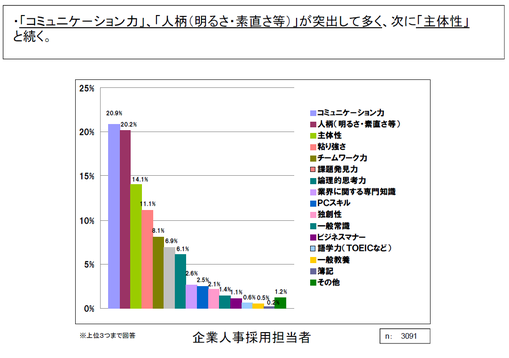

就職活動とコミュニケーション力
 産経新聞が主要企業125社を対象に行った調査によると、
新卒者採用をする際に「求められる人物像」（複数回答）は、
「コミュニケーション力」（の高い人）と答えた会社が90％でトップとなった。
この結果に対して「コミュニケーション力」とは？という意見があった
一般に「コミュニケーション」というのは、情報の伝達だけが起きればが充分に成立したとは見なされておらず、
人間と人間の間で、《意志の疎通》が行われたり、《心や気持ちの通い合い》が行われたり、《互いに理解し合う》ことが起きて、
はじめてコミュニケーションが成立した、とされている、といった説明を補っているものもある(Wikipediaより)
高校生の方々へ…[言語と社会]ではグループディスカッションが多くこれからの就活や社会におけるコミュニケーション力をとても養えると思います。
なので”公立はこだて未来”に入学した人はぜひ[言語と社会]を取り、それ以外でもコミュニケーション力は必ずつけてほしいと思います(*^▽^*)
→コミュニケーション(Wikipedia)
→就活コーチ
→会社ウォッチ